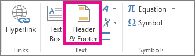

Click the worksheet where you want to add or change headers or footers.
On the Insert tab, in the Text group, click Header & Footer.

Excel displays the worksheet in Page Layout view.
To add or edit a header or footer, click the left, center, or right header or footer text box at the top or the bottom of the worksheet page (under Header, or above Footer).
Type the new header or footer text.